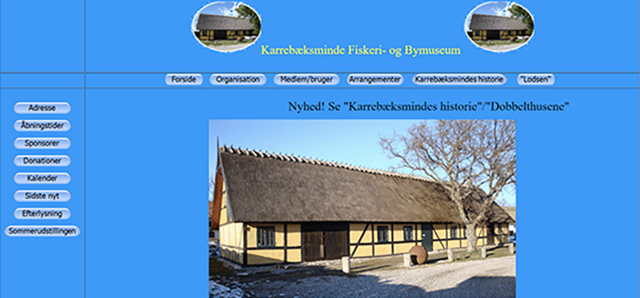
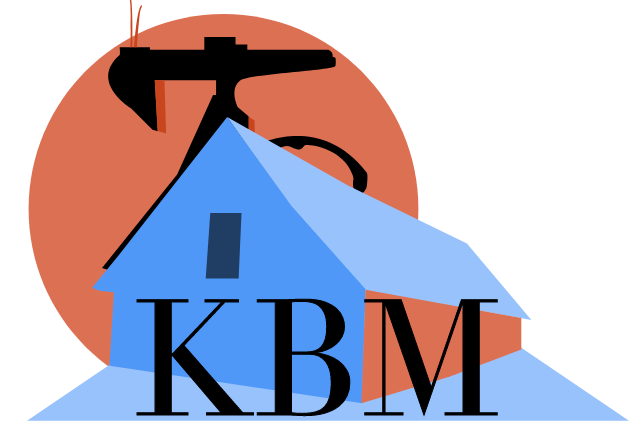

Redesign a website of your choice - Group project
Each group must choose a website that needs a redesign - we picked kbm-museum.dk
Before starting our brainstorming about ideas for our redesign, we did some testing on the design, to see where the biggest challenges were on their website. We found a few problems with the navigation and with finding specific and relevant information on their website about the organization. Afterwards we did some brainstorming and we talked about our visions for what we wanted for the redesign individually. We collected all of our ideas and picked a few and the best from each person so we all got a piece of our vision in the project.
We started to visualize our design ideas by making a style tile. Here we picked the colors we wanted, how the buttons should look and which fonts to use. The colors were inspired by the sea and something a little old looking as kbm-museum is about town history and fishing. We made a new logo as we could not find any logo during our test of the website.
After our brainstorming and logo-redesign, we made wireframes for both the frontpage and the 3 subpages that we chose to redesign. We made a new menu structure, where we took some of the menu topics and put them together or relocated some menu topics under others. At the old design that kbm-museum had, they didn’t really use their front page for anything other than a picture of the place. We decided to use the front page more and make some call to action buttons to draw the visitors into the subpages.
After we made our lo-fi and hi-fi wireframe we made a mock-up of each design to see if the colors were a match to the elements and matched with each other as we wanted it to. From the mock-ups we worked further and made our nearly final design before testing it on some potential users. From there we made some changes that they pointed out for us during the testing and we ended up with our final design to present which is made in Adobe XD.